DE - Representation Home : www.sharetechnote.com
- Modeling Overview
- How to get a Governing Equation ?
- Modeling Building Blocks
- Mechanical Building Block : Spring
- Mechanical Building Block : Damper
- Mechanical Building Block : Mass
- Mechanical Building Block : Spring-Mass
- Mechanical Building Block : Spring-Damper
- Mechanical Building Block : Spring-Mass-Damper
- Mechanical Building Block : Rotational Bar
- Mechanical Building Block : Rotational Damper
- Mechanical Building Block : Rotational Mass (Rotational Inertia)
- Modeling Examples :
- Mixing Problem(Single Tank)
- Mixing Problem(Two Tank)
- Mixing Problem (Three Tank)
- Physiologically Based Pharmacokinetic Model (Oxytetracycline Residues in Sheep)
- Velocity of Freefall Body
- Simple Pendulum - Newtonian
- Simple Pendulum - Lagrangian
- Single Spring
- Inverted Single Spring
- Inverted Spring-Mass with Damping
- Inverted Spring-Mass with Damping and Moving Base Line
- Inverted Spring-Mass with Damping and Moving Base Line and External Force
- Coupled Springs (Multi Spring)
- Electric Circuit Analysis
- Electro Mechanical System
Most of the mathematical methods are designed to express a realife problems into a mathematical language. This is called 'modeling', at least in engineering Mathematical Modeling is the most important reason why we have to study math.
With Matrix, Differential Equation is one of the most usefull tool for mathematical modeling and following illustration would show you a several different format of Mathematical Models derived from differential equation.

Usually (at least, in most of University Courses), the first step is to describe a system into a set of differential equations and convert those equations into Transfer Function (by Laplace Transform) and State Space Equations.
So it is very important to know the concept of differential equations, but as you repeat this kind of modeling process or work in a specific field for a long time, you would get the tricks to directly construct Transfer Function or State Space Equation without getting into the steps of building up the differential equation.
There are many engineering softwares out there to solve various engineering problems. Some of the tools requires you to input your problem in the form of differential equation, some others requires the input as Transfer Function and some others requires the input as State Space Equation. To utilize these tools as much as possible, you need to understand the concept of all these mathematical variations.
You will notice from the sample models in later sections that the most important step for modeling is to figure out 'Governing Equation' for the system.
Then you may ask "How can I get the governing equation for the system ?".
The simplest answer would be "use your common sense or intuition and try to make your own question about the system".
For example, let's suppose that you have a mass tied to the end of a spring in vertical direction and pulled the mass down and released it.
Possible questions for this case would be
- Where the mass will be at 2 seconds from now ?
- What would be the speed of the mass at 2 seconds from now ?
This is a good starting point, but these question by themselves does not generate the governing equations. You need some formal knowledge to figure out the governing equation that will give you the answers to your questions.
There are several useful rules that can lead you to a geverning equation. In case of mechanical system/dynamic system (system dealing with moving object), followings can be the most frequently used rules. Don't try just blindly memorize these rules and it would not help much. Just try to understand the meaning of these rules.
I would not explain any further about these equation. Try yourself to find materials from internet or text book. Try reading different sources as diverse as possible. Everybody would give you a little bit different aspect and insight. As you read through those sources, your brain would reorgnaize it by itself and you will get your own understanding of these rules.
If you have solid understanding of these rules, you would be able to follow through the example models in this post without any difficulties.
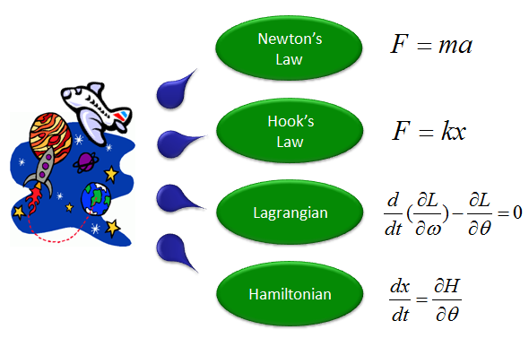
If you are dealing with any electrical/ectronic system, following rules can be a good source that lead you to a proper governing equation.

As I said in Introduction of Engineering Math page, Mathematics is a kind of language. In any kind of language learning, the first step is to learn the vacabularies/words and the rules to combine those words into a sentence. The intention of this section is to provide you a handy dictionary of words for a language called 'Differential Equation'. But don't try to blindly read through this section from the beginning to the ends. You may have not seen any person who is trying to bindly remember every words in a dictionary from the first page to the last page. Normally you would try to speak a simple sentence or you would hear somebody say some sentences and then you would look into a dictionary when you come accross any word that you don't know. You can use this section in the same manner. See 'Modeling Example' section first (these are kinds of sentences written in differential equation and get back to this section when you have difficulties in understanding how the sentence is derived)
I will start out with very short list of dictionary but I will keep updading this section to make it thicker and thicker.
< Mechanical Building Block : Spring >

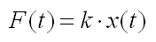
< Mechanical Building Block : Damper >
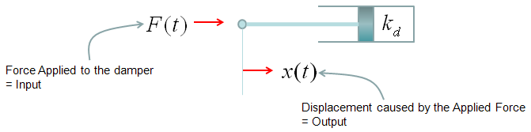

< Mechanical Building Block : Mass>


< Mechanical Building Block : Spring-Mass >
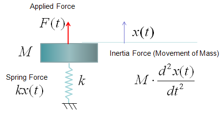
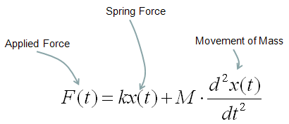
< Mechanical Building Block : Spring-Damper >

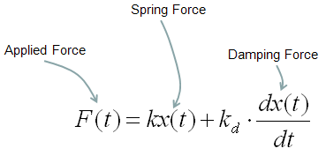
< Mechanical Building Block : Spring-Mass-Damper >

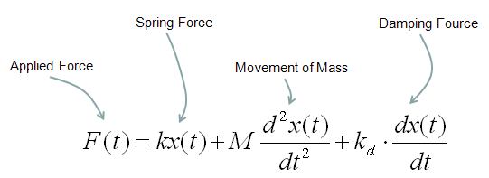
< Mechanical Building Block : Rotational Bar >
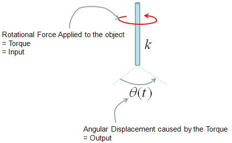
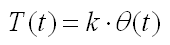
< Mechanical Building Block : Rotational Damper >


< Mechanical Building Block : Rotational Mass (Rotational Inertia) >

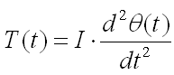
< Electrical Building Block - Reister >
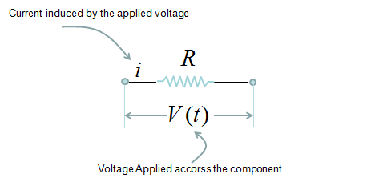

< Electrical Building Block - Inductor >
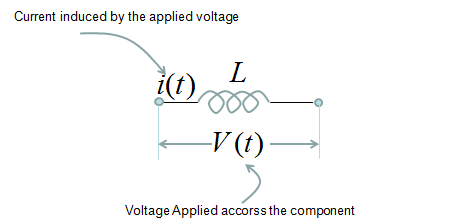

< Electrical Building Block - Capacitor >

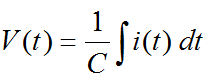
This is one of the most common problems for differential equation course. You will see the same or similar type of examples from almost any books on differential equations under the title/label of "Tank problem", "Mixing Problem" or "Compartment Problem". But I think (hope) I will be providing the most detailed / step-by-step explanation -:)
To be honest I was not so good at solving this kind of problems when I first studying the problem even though it is only simple first order differential equation. Come to think of it, the reason why I was not so good at this was because I didn't clearly understand the steps through which we generate a differential equation from the description of the problem. That is, I was not so good at the modeling process.
One example for this kind of problems is as follows :
i) There is a tank which has a mixture of Water and Alcohole. (Total volume of the mixture(solution) is 1000 liter).
ii) The initial concentration of Alcohol is 10 % (it means that Water is solvent and Alcohol is solute)
iii) There is an outlet through which the solution is going out at the rate of 50 liter/min.
iv) There is an inlet through which a solution (mixture of water and alcohol) is coming in at the rate of 50 liter/min. The concentration of the alcohol in the incoming solution is 50%.
The question is what will be the concentration of the alcohol of the solution in the tank after 10 mins ?
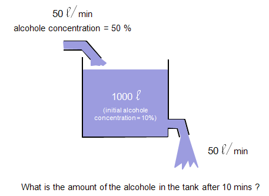
The process of deducing the differential equation (modeling) is as follows. I think you have already went through a couple of examples of this kind in your Differential equation course (or you can search several tutorials of this kind in the internet) and see if the following process that I put down makes any sense to you.

Note : Don't you have any question at this point ? If you have the question saying "In the description of the problem, I see the statement 'the initial concentration of alcohol in the tank is 10%', but I don't see this condition is being used in the derivation of the equation. Does this mean that this initial condition is useless ?"
We don't need the initial condition at least for modeling process (the process of deriving the differential equation), but we need the initial condition when we solve the equation to get a specific values from the solution. (In this problem, the initial condition y(0) = 1000 liter of solution x 0.1 (10 % of concentration of alcohol) = 100).
Example : Mixing Problem (Two Tank)
If you haven't read the previous example (One Tank example), please go through it first and get back to this example and try to find what is the difference and what is common. and more importantly try to find some pattern of extending the logic of thinking on modeling.
Now we have another tank (the second tank) get connected to the first tank that I used in previous example. First, just take brief look at the diagrame espectiall the direction of arrows.
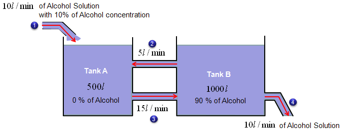
i) There are two tanks which has a mixture of Water and Alcohole. (Total volume of the mixture(solution) of Tank A is 500 liter and the volume of Tank B is 1000 litter).
ii) The initial concentration of Alcohol for Tank A is 0 % (it means that pure Water)
iii) The initial concentration of Alcohol for Tank B is 90 %
iv) There is an outlet for Tank A through which the solution is going out at the rate of 15 liter/min.
v) There are two outlets for Tank B and the solution is going out at the rate of 5 liter/min through one outlet and the solution is going out at the rate of 10 liter/min through the other outlet.
vi) There are two inlets for Tank A. A solution (mixture of water and alcohol) is coming in at the rate of 10 liter/min with the concentration of 10 % through one inlet and solution (mixture of water and alcohol) is coming in at the rate of 5 liter/min with the yet unknown concentration through one inlet.
vii) There are one inlet for Tank B. A solution (mixture of water and alcohol) is coming in at the rate of 15 liter/min with the yet unknown concentration through the inlet.
The question is what will be the concentration of the alcohol of the solution in the tank A and Tank B after 10 mins ?
Before jumping into the modeling process, let me give you a couple of questions that can easily be overlooked but important.
Would the volume of solution for each tank change over time ?
The answer is NO, the volume does not change over time. Most of this kind of problem from the text book are carefully designed so that the volum of tank does not change over time.
Why do they set the problem so that the volum of the solution in the tank does not change ?
It is because the mathematical equation will simpler under that condition.
Let's summarize some of the initial conditions and define some of the variables for modeling.

Now let's look into the governing law of this problem.
The rule is as follows and you will notice that this law is exactly same as what you saw in previous example (Single Tank case). The only difference is that Tank A has one more inlet.

Next step is to describe the amount of alcohol coming in and out of the tank A in mathmatical terms as follows. Overall the expressions are simple. The only thing you have to think a little bit is the expression for the concentration of alcohol for each tank. They are expressed as x/500 and y/1000. These can be expressed in this kind of simple manner because we set the problem so that the total amount of solution for each tank does not change over time. If the total volume of each tank changes, you cannot express it as a simple number like '500' or '1000'. You would need the functions (a function of t) describing the volume of each tank over time.
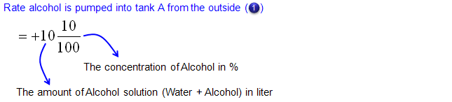
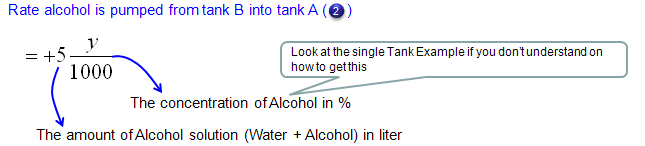

Now let's look into governing law for Tank B. Overall process is as follows and you will notice that the process (logic) is exactly same as you did for Tank A.
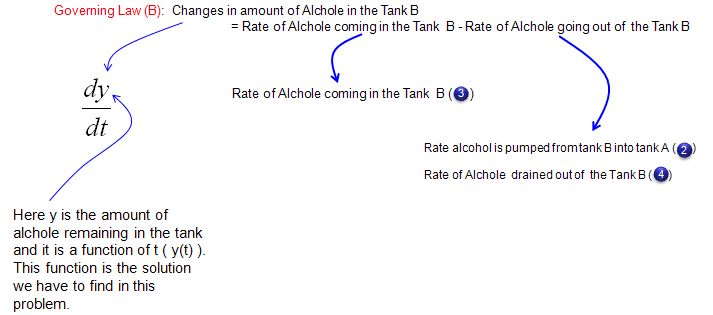
Mathematical expression of each terms of governing law (governing equation) are as follows.
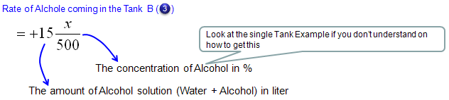
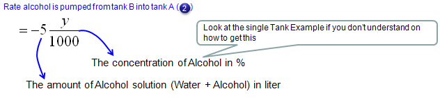

Now we have each terms (components) of governing law for Tank A and Tank B. If you just combine those components according to the governing law you will get the following two differential equation.

Writing again the two equations into a simultaneous equation (system equation), we get the following.

This is done with modeling and you can solve the equations as it is, but some software require the system equations to be input in matrix format as follows.

Example : Mixing Problem (Three Tanks)
This is one-step further extention of the previous example. (Make it sure that you have gone through the previous two examples - single tank, two tank problems before you start this example).
Now we have another tank (the third tank) get connected to the second tank that I used in previous example. First, just take brief look at the diagrame espectiall the direction of arrows.
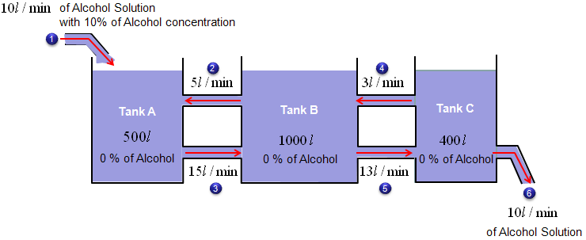
i) There are three tanks which has a mixture of Water and Alcohole. (Total volume of the mixture(solution) of Tank A is 500 liter and the volume of Tank B is 1000 litter and the volume of Tank C is 400 litter).
ii) The initial concentration of Alcohol for Tank A is 0 % (it means that pure Water)
iii) The initial concentration of Alcohol for Tank B is 0 % (it means that pure Water)
iv) The initial concentration of Alcohol for Tank C is 0 % (it means that pure Water)
v) There is an outlet for Tank A through which the solution is going out at the rate of 15 liter/min.
vi) There are two outlets for Tank B and the solution is going out at the rate of 5 liter/min through one outlet and the solution is going out at the rate of 13 liter/min through the other outlet.
vii) There are two outlets for Tank C and the solution is going out at the rate of 3 liter/min through one outlet and the solution is going out at the rate of 10 liter/min through the other outlet.
viii) There are two inlets for Tank A. A solution (mixture of water and alcohol) is coming in at the rate of 10 liter/min with the concentration of 10 % through one inlet and solution (mixture of water and alcohol) is coming in at the rate of 5 liter/min with the yet unknown concentration through one inlet.
ix) There are two inlet for Tank B. A solution (mixture of water and alcohol) is coming in at the rate of 15 liter/min with the yet unknown concentration through the inlet and solution (mixture of water and alcohol) is coming in at the rate of 3 liter/min with the yet unknown concentration through one inlet..
x) There is one inlet for Tank C. A solution (mixture of water and alcohol) is coming in at the rate of 13 liter/min with the yet unknown concentration through the inlet
The question is what will be the concentration of the alcohol of the solution in the tank A,Tank B and Tank C after 10 mins ?
Before jumping into the modeling process, let me give you a couple of questions that can easily be overlooked but important.
Would the volume of solution for each tank change over time ?
The answer is NO, the volume does not change over time. Most of this kind of problem from the text book are carefully designed so that the volum of tank does not change over time.
Why do they set the problem so that the volum of the solution in the tank does not change ?
It is because the mathematical equation will simpler under that condition.
Let's summarize some of the initial conditions and define some of the variables for modeling.

Now let's look into the governing law of this problem.
The rule is as follows and you will notice that this law is exactly same as what you saw in previous example (Two Tank case).

Next step is to describe the amount of alcohol coming in and out of the tank A in mathmatical terms as follows. Overall the expressions are simple. The only thing you have to think a little bit is the expression for the concentration of alcohol for each tank. They are expressed as x/500 and y/1000. These can be expressed in this kind of simple manner because we set the problem so that the total amount of solution for each tank does not change over time. If the total volume of each tank changes, you cannot express it as a simple number like '500' or '1000'. You would need the functions (a function of t) describing the volume of each tank over time.


Now let's look into governing law for Tank B. Overall process is as follows and you will notice that the process (logic) is exactly same as you did for Tank A.
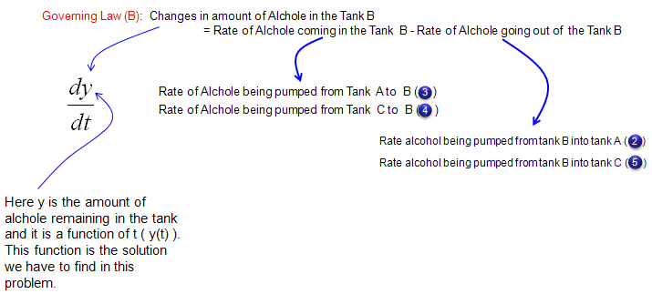
Mathematical expression of each terms of governing law (governing equation) are as follows.
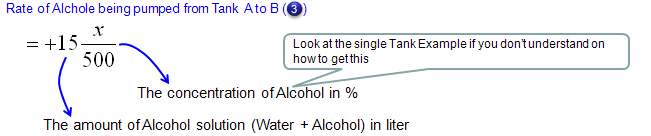

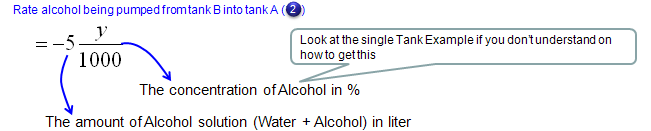
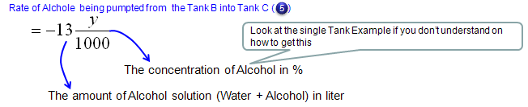
Now let's look into governing law for Tank C. Overall process is as follows and you will notice that the process (logic) is exactly same as you did for Tank A.

Mathematical expression of each terms of governing law (governing equation) are as follows.

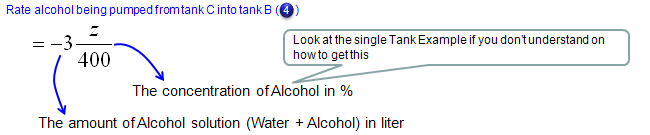
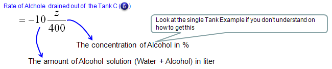
Now we have each terms (components) of governing law for Tank A,Tank B and Tank C. If you just combine those components according to the governing law you will get the following three differential equation.


Writing again the three equations into a simultaneous equation (system equation), we get the following.

This is done with modeling and you can solve the equations as it is, but some software require the system equations to be input in matrix format as follows.
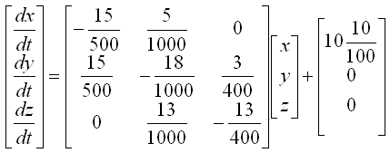
Physiologically Based Pharmacokinetic Model (Oxytetracycline Residues in Sheep)
This is a typical real life problem that can be extended from the mixing problems (tank problems) that we saw in previous examples.
This example came from the following reference. If you want to get further details, refer to following source.
J. vet. Pharmacol. Therap. 26, 5563, 2003.
A physiologically based pharmacokinetic model for oxytetracycline
residues in sheep
A. L. CRAIGMILL
Food Animal Residue Avoidance Databank,
Environmental Toxicology Extension,
University of California, Davis, CA 95616,USA
This is to model to see how a chemical injected into a body of an animal spread into all the organs and how the concentration of the chemical changes over time in each organs.
The diagram for the model is shown below. It would look complicated... it is. But this is real life problem and most of real life problems are much more complicated than the one you see in the textbook. But point is that even such a complicated model like this are based on the same logic that you learned from the text book. Of course it is not easy to recognize the direct relationship between the real life problem and the text book examples. However, don't get disappointed if you don't recognize the relationship within 5 mins or even within a couple of hours. For the realife problem like this, it would take a least several months just to understand the details and reach the point where you can draw mathematical formula. So very important characteristics that you should have in addition to mathematical skills is to have 'persistence', 'perseverance'.
Anyway... if you consider each organs of the following diagram to be a tank of mixing problem that we covered in previous examples, this model can be just a mixing problem with 7 tanks.
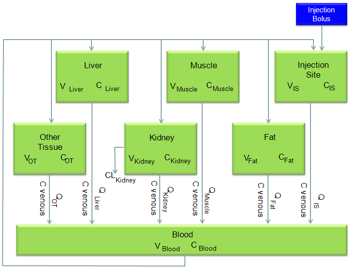
I would not want to describe each and every steps to draw out the differential equations from this model. I would just show the final outcome of the model from the reference. Just look at the equation and see if you can understand overal logics.
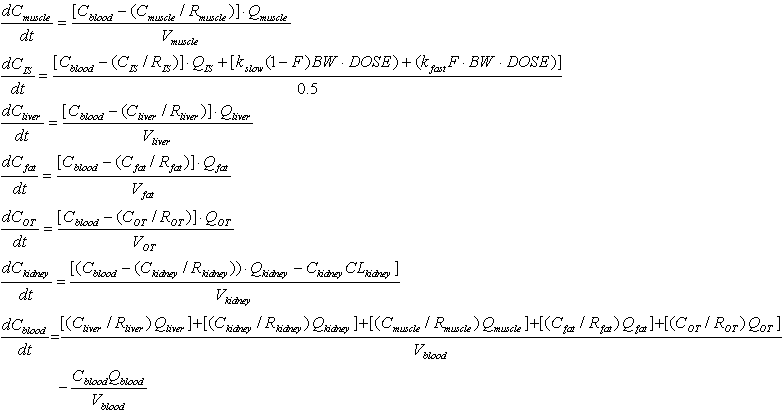
Example : Velocity of Freefall Body
Direction : Derive a differential equation that tells you the velocity of a falling body at any given time.
(Assume the condition where you should not ignore the air resistance)
What is the governing rule ?
Total Force applied to a body = Motion of the body
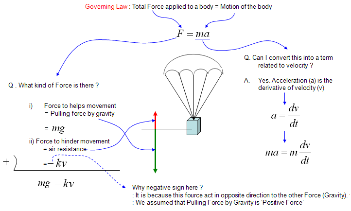
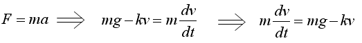
Note : This can be one of the simplest modeling example, but it doesn't mean that you should be able to understand everything here in 5 minutes and you are dumb if you don't understand this so quickly. I hope you would have a lot of questions that has not clearly been explained in my explanation above and that has not been treated in your math course. For example, my own questions are like this. The explanation said the air resistance can be expressed as -kv, but how did you know that ? Juding from the expression, it seems that the air resistance is determined only by the velocity ? How did you guarantee that the resistance is not influenced by other factors like acceleration, mass of the falling body ? How about the shape of the falling body or paraschute ? Doesn't this influence the resistance force ? Judging from our common sense, the shape/size of the paraschute definately influence the resistance force. How come this term is not shown in the mathematical expression, -kv ? what does 'k' mean ? How can we determine this value ? what kind of factors are involved in determining k value (Actually, the shape of paraschute or falling body can be a very important factors to determine the k value). Like this, we can have an endless list of questions boggling in your mind if you are really doing the mathematical modeling in stead of rotely memorizing whatever your textbook or teach tells. I am not saying that you always have to raise your hand in your math class and argue with your math teacher until you get the answers to all of these kind of questions. These are the questions you continue to investigate to expand this kind of basic model to a better/real life models.
Example : Simple Pendulum - Newtonian
Now let's look at another famous example, 'Simple Pendulum (Single Pendulum)'. Governing Law is same as other dynamic system saying "Total Force being applied to a moving body represents the motion of the body". Basic format is derived from F = ma. The only difference is that Pendulum is for rotational motion whereas F=ma is for linear movement, but the basic concept is same.
Following is each components of the government equation for the simple pendulum.
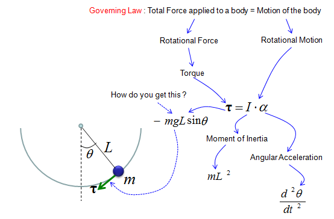
As shown above, the key factor in the governing equation is Torque and you may ask "Where does this Torque come from ?". In another word, what is the source of the torque.
The source of the torque comes from the gravity from the Earth since we don't apply any additional force to the pendulum. You just lifted up the pendulum and just let it go. You didn't push the pendulum and just let it go. So the only source of the driving force is gravitational force. The gravitational force is applied in the direction as shown on the right side of illustration below.
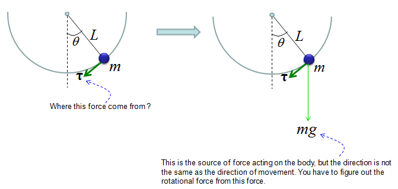
Then how can I derive the torque from the gravitational force ?
If you just draw a couple of additional arrows as shown below, you would easily figure out the Torque from high school trigonometry.
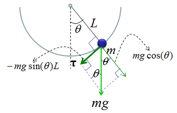
With this understanding and the first illustration, you would get a differential equation as follows.
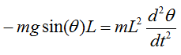
With a little bit of methematical touch, you would get much simpler equation as show below.

The equation shown above is the pendulum with no damping (e.g, no resistence by air and any other frictions).
Now let's look at the case where the damping gets involved. You would the differential equation with damping just by adding an additional arrow show in red below.

If you just 'READ' the illustration shown above, you would get the following differential equation.

Example : Simple Pendulum - Lagrangian
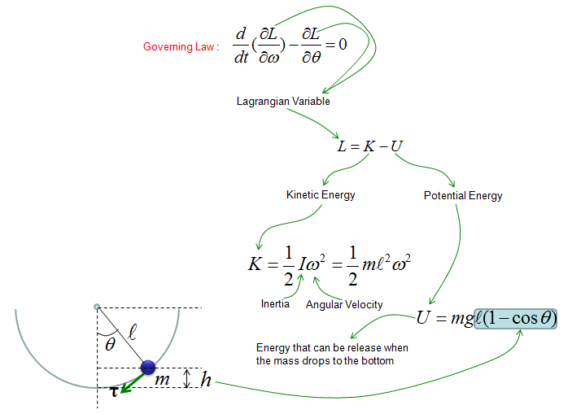
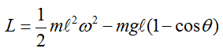
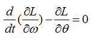

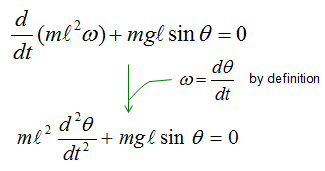
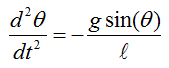
This is one of the most famous example of differential equation. Probably you may already learned about general behavior of this kind of spring mass system in high school physics in relation to Hook's Law or Harmonic Motion. Of course, you may not heard anything about 'Differential Equation' in the high school physics. (As for the general introduction of this system, see this excelent video and get some intuitive idea on the system: Mechanical Universe 16 - Harmonic Motion. If this link does not work, try searching in YouTube with the keyword 'Mechanical Universe 16 - Harmonic Motion').
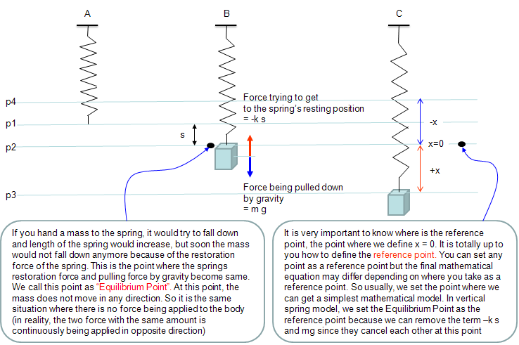
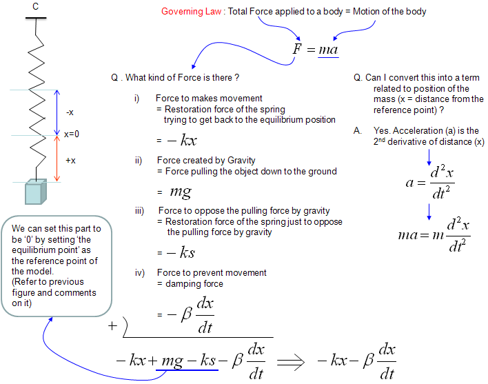

In this example, you have learned how to model the motion of a mass tied to a vertical spring. From this very simple example, you can extend to more and more complicated situation which is closer to real engineering example. Following would be general steps on how to extend this simple spring model to more complicated situation (There are no detailed explanation about the modeling process. It would just give you the differential equation and show how the solution of the equation look like, but I hope you would not have much difficulties understand the equations). First two are the one you saw in this example, but I listed here to show you how the solution look like.
- Undamped
- Damped
- Damped with External Force
- Vander Pol Oscillator (This is the case where the damping coefficient is a function of x(t), not a constant)
Example : Coupled Spring (Multi Spring)
The examples in this section will be very usefull to model various mechanical system. You would say "This is just two springs or three springs connected to each other.. doesn't look like very useful". But there are many mechanical problems that can be described in the form of multiple masses connected to each other with springs. For example, you can model an entire automobiles with several hundreds masses connected to each other by several undreds springs and can analyze how the each parts of the whole car vibrate when you drive it along a bumpy road.
You may think this kind of simple two or three spring model is not related to such a complicated model for the entire car, but in reality the logic and process of modeling is exactly same. You would just have several dozens of differential equations in stead of two or three equeations, which is very similar to what you see here.
Don't worry about solving a system differential equation which is made up of several hundred equations. Nobody do it by hand. There is a lot of computer tools to do this. Your job is to fill in the parameters or sometimes mathmatical equations to such tools and to do that you have to understand the meaning/logics of the mathematical model.
< Example : Two coupled spring without damping >
Now let's look into a little bit more complex spring model as shown below.
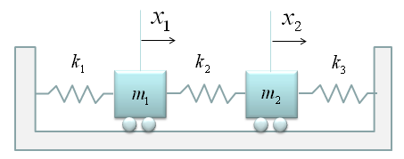
At the first look, you may be overwhelmed by the complexity of the situation. But don't be scared, there is an easy way to do the modeling for this kind. The trick is to split the problem into multiple single spring situation. Then you can use the logic that you have learned in the single spring model. (Note : This is a model which may be simpler than the real life system. First, you don't see any external forces applied to any of the mass. Also, you don't see any friction (or damping) is applied to the mass. It means the movement of the mass is only determined by spring force).
In this example, we can split the whole system into following two single spring model. As you see, the governing rule is same as the one we saw in the single spring model. (If you get familiar with this kind of splitting method, you can easily do the modeling for a system with even 100 mass/springs. Logic would be the same. You would get 100 differential equations of single spring-mass. that's it).

If you can draw a diagram as shown above and express the behavior of each component in a mathmatical form, it is the end of modeling. You already complete the modeling of this system. But to convert the model into a set of differential equations that is familiar to us, let's rearrange the each of the mathematical components.
Let's start with the model for the first mass-spring component. Actually the first line can express the physical meaning of the model the best, but for mathematical convinience or for applying other analytic method, we often do this kind of rearrangement, but there is no single best expression. if you see various textbooks, you would notice that everybody would use a little bit different format. So just pick one of this form and trying to memorize it would not have any practical use.. try to understand the meaning of each component in stead of memorizing the equation.
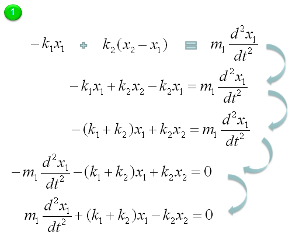
Let's start with the model for the second mass-spring component. A
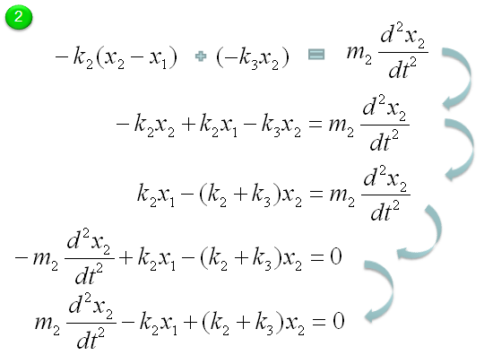
Through the process described above, now we got two differential equations and the solution of this two-spring (couple spring) problem is to figure out x1(t), x2(t) out of the following simultaneous differential equations (system equation).

This is the end of modeling. But some textbook likes to express this kind of simultaneous equations into a matrix form as follows. This is just a different ways of expression but sometimes looks very intimidating. (This is just a psychological issues that I mentioned the introduction page).

< Example : Two coupled spring with Damping >
This example is just half step extension of previous example. It is made up of two mass and three springs which is the same as in previous example. The only difference is that damping factors are introduced as shown below.

If you have followed through the previous examples, you may know what to do by now.
i) Split the given model into each component
ii) Define the governing rules for each component.
This is the procedure for any kind of mathemtical modeling.
The governing rule of the first component is as follows. Overall logic is
i) Define all the forces being applied to the object
ii) Draw arrows represending the direction of the force (Be very careful of determining the direction of arrows since it determines the sign of the mathematical term)
iii) Write the mathematical formula to each of the forces (arrows)
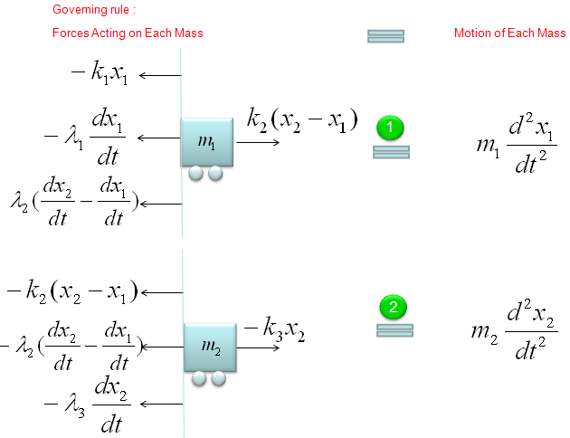
Next step is to combine all the mathematical components of each arrow and the motion of the movement into a single equation as follows. The first line is the orginal form. All the other lines are just rearrangement of the first line, so mathematically they are all same. You can just pick whatever you want for your needs/preference, but the last one and the second-to-the-last one are the most common forms.
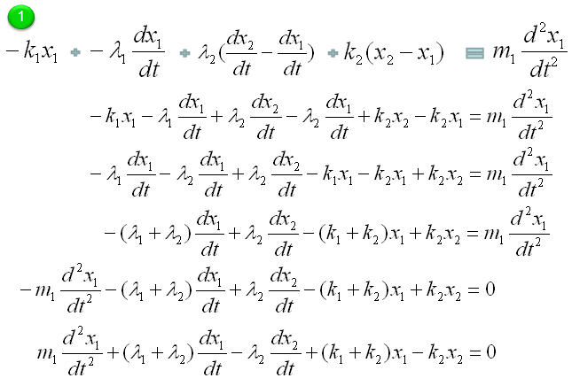
Do the same thing for the second component as shown below.

Now we have two differential equations for two mass (component of the system) and let's just combine the two equations into a system equations (simultaenous equations) as shown below.

In most cases and in purely mathematical terms, this system equation is all you need and this is the end of the modeling. But in some case you may want to convert these system equations into a set of the first order equations as follows. (If you are not familiar with this kind of conversion process, refer to Converting High Order Differential Equation into First Order Simultaneous Differential Equation)

Once you have a set of differential equation which are all first order, you can easily convert it in the form of Matrix equation as shown below. (If you are not familiar with this kind of conversion, refer to Differential Equation meeting Matrix)
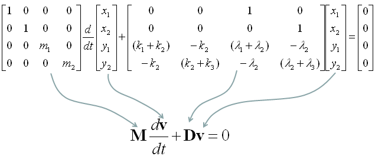
< Example : Inverted Spring-Mass with Damping >
Now let's look at a simple, but realistic case. Let's assume that a car is moving on the perfactly smooth road. This can be illustrated as follows. The body of the car is represented as m, and the suspension system is represented as a damper and spring as shown below. (Note: You may ask why the gravitational force being applied to the mass is not considered here. It is because of the assupmtion that the equilibrium point is set so that the gravitational force is cancelled out. See the Simple Spring example about the equilibrim point)
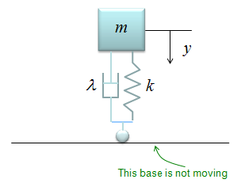
The differential equation can be represented as shown below. I will not describe the steps to come up with this equation. Try yourself to figure out how to derive this equation based on previous examples. You would not have much difficulties for it.

< Example : Inverted Spring-Mass with Damping and Moving Base Line >
This example is similar to previous example, but has one additional factor. In this example, the car is not moving along a smooth road. it is moving a long a bumpy road as illustrated on the left side. This can be modeled in a similar way to the previous example except that the base line is moving as illustrated on the right side.

The differential equation can be represented as shown below. I will not describe the steps to come up with this equation. Try yourself to figure out how to derive this equation based on previous examples. You would not have much difficulties for it. You would notice that another displace variable y2 is introduced in this equation.

If the car is moving on perfectly harmonic surface, the y2 can be expressed as a trigonometric function (e.g, cos(w t)) and the w can be determined by the speed of the car. So with this equation, you can figure out how the body of the car will move up and down when the car is moving on a bumpy road with a certain velocity.
< Example : Inverted Spring-Mass with Damping and Moving Base Line and External Force>
This example is similar to previous example, but has one additional factor. In this example, the car is moving along a bumpy road and it also is under some external force. (In most case, the car is experencing various internal vibration and the vibration can be a kind of external force). This can be modeled in a similar way to the previous example except that the base line is moving as illustrated on the right side.

The differential equation can be represented as shown below. I will not describe the steps to come up with this equation. Try yourself to figure out how to derive this equation based on previous examples. You would not have much difficulties for it. You would notice that another displace variable y2 is introduced in this equation.

If the car is vibrating in a harmonic function with a certain frequency and the F can be expressed as a trigonometric function (e.g, cos(f t)). So with this equation, you can figure out how the body of the car will move up and down when the car is moving on a bumpy road with a certain velocity and the body is also expericing vibration.
< Example : Coupled spring - Vehicle Suspension System >
You can practice what you learned from the previous two examples and this is the one that can be easily extended for a real life problem. You can easily apply this example to model a suspension system of a vehicle.
It may look a little bit scary, but the logic of the modeling is always the same however complex system it is.
Do you remember the logic (process) ?
i) Break down the system into each component. (When you see this kind of spring-mass system, each Mass is the building block of the system).
ii) Draw the arrows (vectors) to represent the direction of Forces being applied to each component.
iii) Write down mathematical formula for each of the arrows (vectors).
iv) Combine all the component formula into a single differential equation
Now Let's start with the first component. Can you identify the component ? M1 is the first component. Mark all the springs, damper and applied force for the component as shown below.
Now draw arrows (vectors) to represent forces being aplied to the component (Mass) as shown below.

Now combine each component formula into single differential equation as shown below.

Now Let's start with the second component. Can you identify the component ? M2 is the first component. Mark all the springs, damper and applied force for the component as shown below.
Now draw arrows (vectors) to represent forces being aplied to the component (Mass) as shown below.
Now combine each component formula into single differential equation as shown below.

With a little bit of operation, you can simplify the equation into the one as follows.
If you combine the equation for component 1 and component 2, you would get a system equation as follows.
I wouldn't do this here, but I recommend you to try to convert this into a matrix form. It will be a good practice for first order conversion and matrix form conversion.
Example : Electric Circuit Analysis

Example : Electro Mechanical System